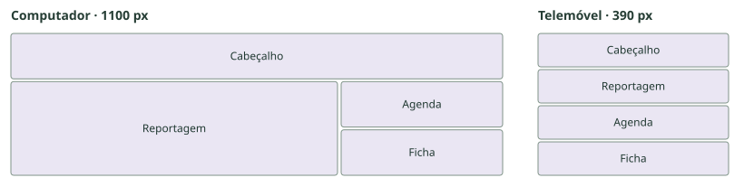

O padeiro da rua de cima
Às seis da manhã, a primeira fornada já perfuma a rua.
Fomos à padaria conhecer quem prepara o pão das nossas tostas.
Café da turma / Grid / G04
Objetivo: Organiza os quatro blocos de uma revista. No telemóvel, lê-se cabeçalho, reportagem, agenda e ficha editorial. No computador, a reportagem fica à esquerda; a agenda e a ficha ficam empilhadas à direita.
Larguras para testar: 390 px, 768 px e 1100 px. São larguras da janela do navegador. Só escreves uma media query se o exercício a pedir.
No CSS: escreve 16px, sem espaço entre o número e a
unidade.
Primeiro passo: Abre style.css no editor e lê a etapa 1.
Quando fizeres uma alteração, guarda o ficheiro e atualiza esta página para veres o que
mudou.
Este esquema mostra as posições, sem escala. Para a largura intermédia, usa os testes no fim.

Área de trabalho · Página da revista do café
Edição de maio
Às seis da manhã, a primeira fornada já perfuma a rua.
Fomos à padaria conhecer quem prepara o pão das nossas tostas.
Já conheces: Colunas iguais ou em proporção 2fr / 1fr; intervalos; dois pontos de mudança com @media.
Com apoio nesta ficha: Um mapa de áreas atribui nomes a posições. Em grid-template-areas, cada par de aspas representa uma fila; grid-area liga o bloco ao nome.
Encontras as instruções de cada etapa em style.css.
Usa o modo responsivo do navegador. Experimenta 390 px (telemóvel), 768 px (intermédio) e 1100 px (computador).
Assinala os testes que passaram. As marcas desaparecem quando atualizas a página; guarda o
resultado em registo.md.
Só no formato intermédio, dá duas partes da largura à agenda e uma à ficha. Mantém o mapa de áreas.